SABORES DE CAÑAS
Menú gastronómico
Conoce algunos de los platillos y bebidas que puedes encontrar en diferentes establecimientos gastronómicos de Cañas, Guanacaste.
Bastos Cañas
Una opción gastronómica local con diferentes alternativas para disfrutar de una comida en Cañas.
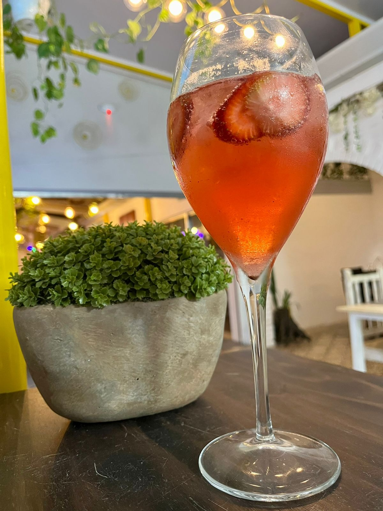
Bebidas
Diferentes bebidas para acompañar los alimentos.
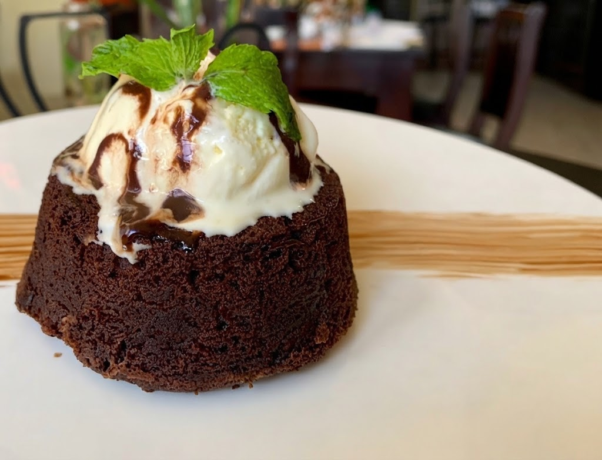
Postres
Opciones dulces para finalizar la experiencia gastronómica.
Hacienda La Pacífica
Espacio gastronómico ubicado en Cañas que ofrece una propuesta inspirada en la cocina de la región.
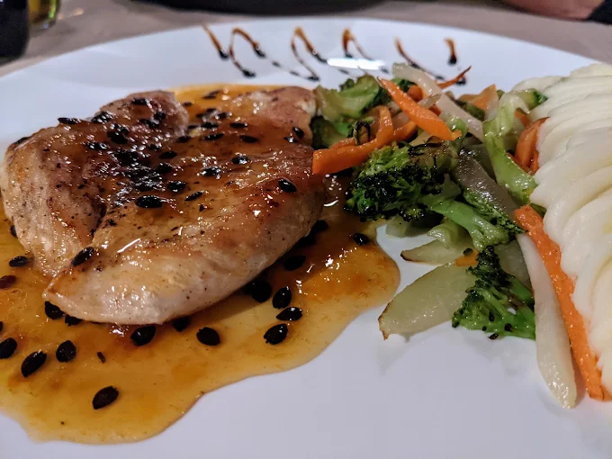
Cocina típica
Platillos inspirados en sabores tradicionales de Costa Rica.
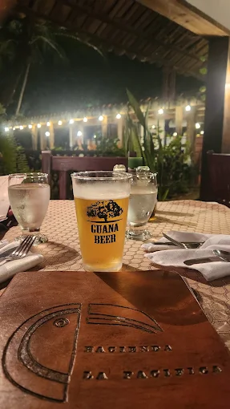
Bebidas
Bebidas para acompañar los diferentes alimentos del menú.
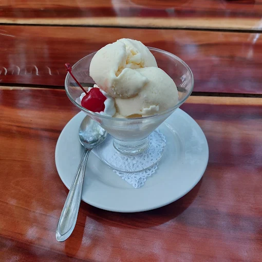
Postres
Alternativas dulces disponibles para complementar la comida.
Cañaveral Restaurante
Restaurante de Cañas con opciones para diferentes gustos y momentos del día.
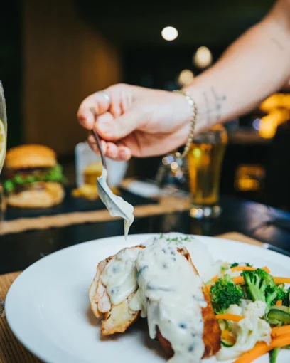
Platillos principales
Preparaciones disponibles dentro de la oferta gastronómica del restaurante.
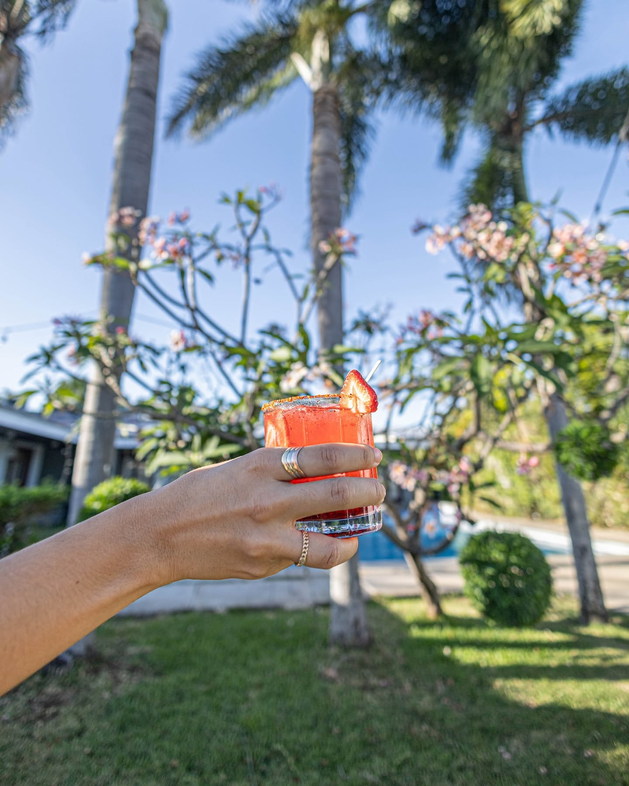
Bebidas
Selección de bebidas para acompañar los alimentos.
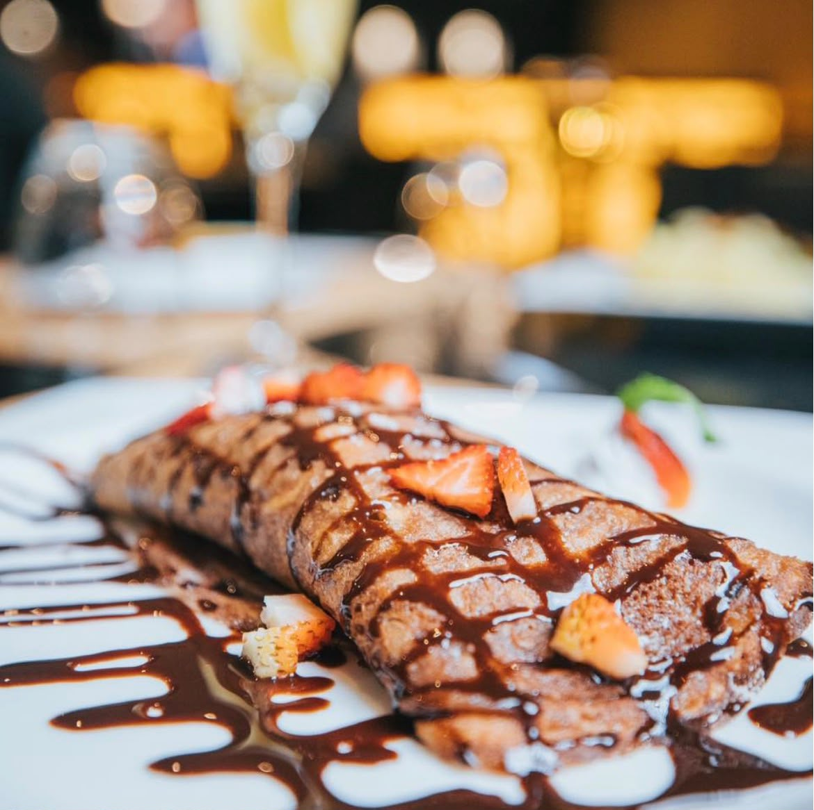
Postres
Opciones dulces disponibles para finalizar la comida.
Cocobolo Restaurante
Restaurante ubicado en Cañas que ofrece diferentes opciones gastronómicas para disfrutar en un ambiente agradable.
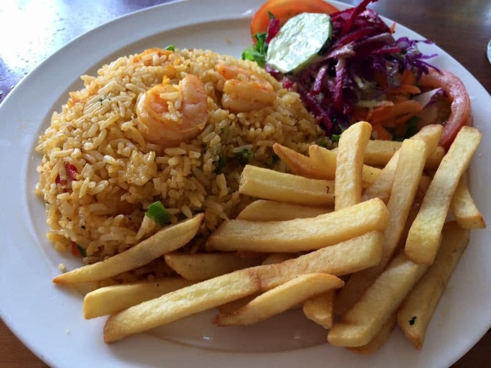
Platillos principales
Diferentes preparaciones disponibles dentro de la oferta gastronómica del restaurante.
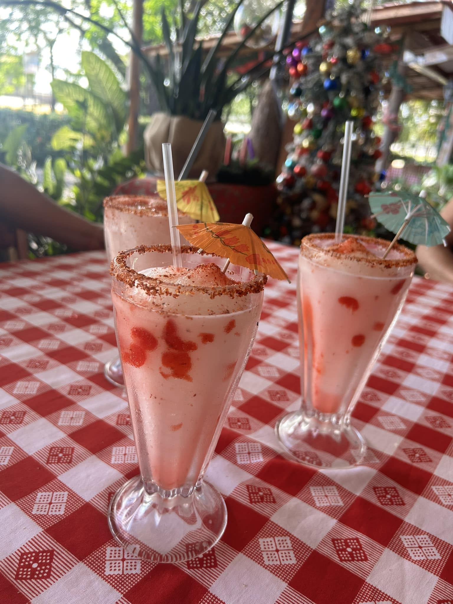
Bebidas
Bebidas disponibles para acompañar los diferentes alimentos.

Postres
Opciones dulces para complementar la experiencia gastronómica.
Mi Tierra
Establecimiento gastronómico de Cañas con opciones de comida para disfrutar diferentes sabores y preparaciones.
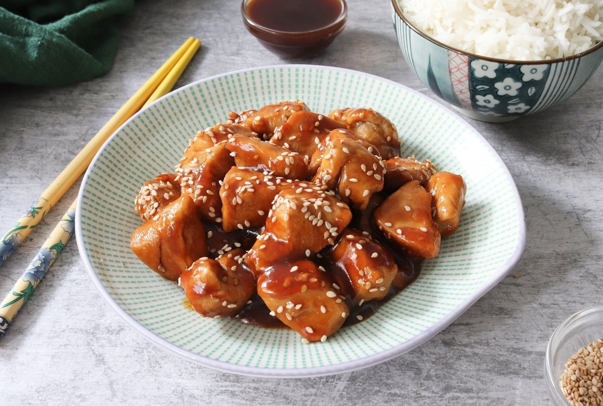
Platillos principales
Preparaciones gastronómicas disponibles para diferentes momentos del día.
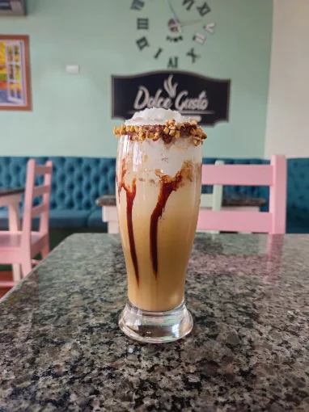
Bebidas
Variedad de bebidas para acompañar los alimentos.
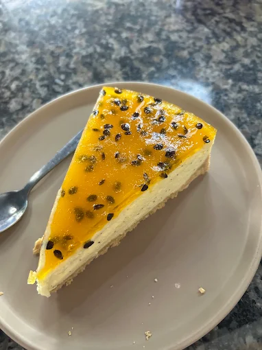
Postres
Opciones dulces disponibles para finalizar la comida.